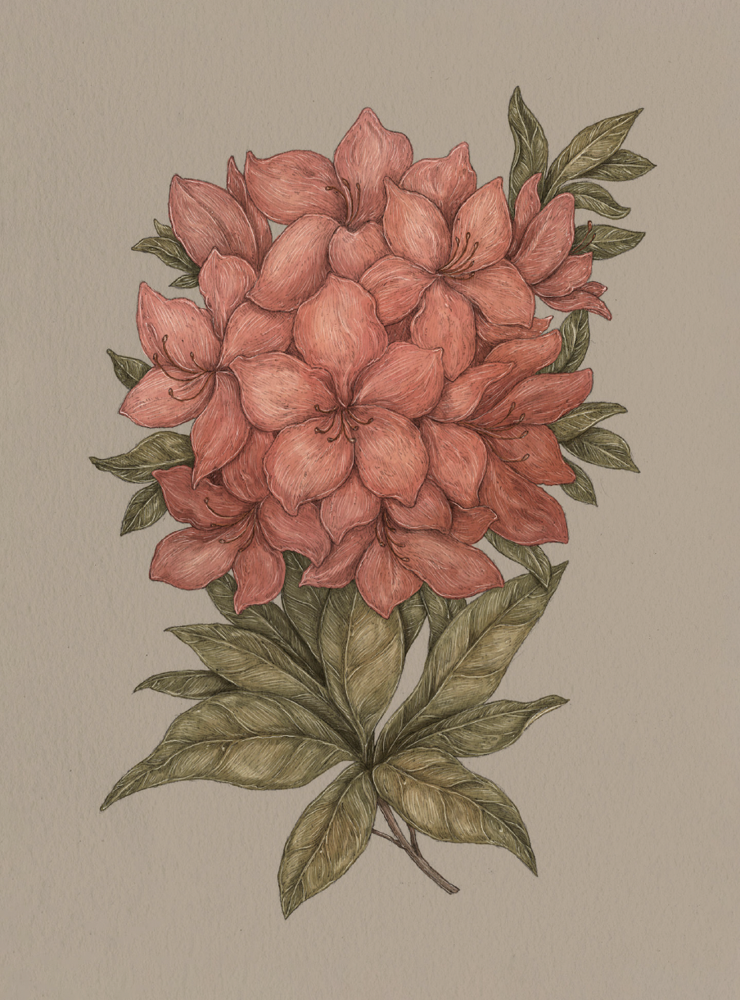

Plate AZALEA
The Language of Flowers
Azalea Study

Azalea
Rhododendron
Definition: A delicate flower associated in floriography with fragility and temperance.
Victoria's Definition: Fragile and ephemeral passion
Meaning
- Fragility
- Temperance
Origin
The azalea is notoriously fragile and difficult to grow. The beautiful, tender blossoms only last for
a short time before tumbling to the ground. Along with this, its shallow roots do not tolerate
overwatering, hence its association with temperance.
Pair With
- Mint or Snowdrop to console a fragile state of mind
- Heather to show the recipient will be taken care of in their time of need